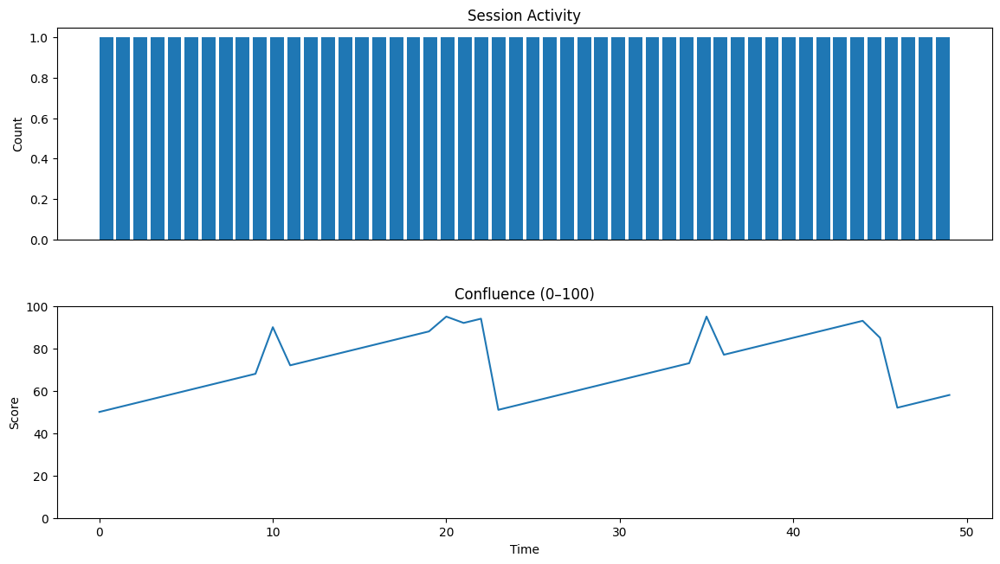

IRONFORGE — Minimal ReportScore scale: 0-1 • threshold=0.7Health: ? Unknown
AUX: Timing Analysis
Total bursts: 3 | Annotated nodes: 46
Burst 0: 4 events, 120.0s duration, 40.0s avg gap
Burst 1: 4 events, 120.0s duration, 40.0s avg gap
Burst 2: 5 events, 120.0s duration, 30.0s avg gap
Burst = 3+ events within 2 minutes

Motifs
| Name | Support | PPV |
|---|
| sweep→fvg | 12 | 0.61 |